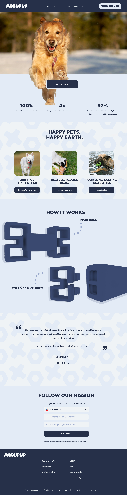

ModuPup is a reusable dog toy mock-brand that I developed including the web design, product modeling, and brand development.
og owners frequently encounter issues with pet toy waste, as traditional toys wear out quickly and contribute to landfill waste. Many pet owners seek sustainable alternatives but struggle to find durable, eco-friendly options that cater to their dog's specific needs. ModuPup aims to address this challenge by offering a modular, customizable, and long-lasting toy system, reducing waste while enhancing the pet play experience.
Understand dog owners' purchasing behaviors and pain points regarding pet toys.
Evaluate the usability and appeal of ModuPup’s modular toy system.
Assess customer perception of the subscription model and sustainability aspects.
Identify potential barriers to adoption and areas for website improvement.
Target Users: Primary Users: Dog owners who prioritize sustainability and quality in pet products.
Secondary Users: Pet enthusiasts, environmentally conscious consumers, and subscription service users.
I conducted a survey that targeted dog owners to gather insights on toy durability concerns, purchasing habits, and interest in sustainable toy options.
85% of respondents expressed frustration with the short lifespan of traditional pet toys
72% of dog owners stated that they try to seek eco-friendly pet products, but find them difficult to find or too expensive
78% found the subscription service model appealing, particularity if it included a discount
Analyzing existing sustainable pet toy brands to identify strengths, weaknesses, and opportunities for differentiation.
Lo-Fi Wireframes
Hi-Fi

Product Design Sketches


Final Drafted Sketches


3D Renders

Brand Identity & Packaging


My next steps for ModuPup is to develop more webpages to truly bring this product to life. Another goal I have for the brand is to further refine my modular design, using Rhino to 3D print a prototype of the product to test in real life.